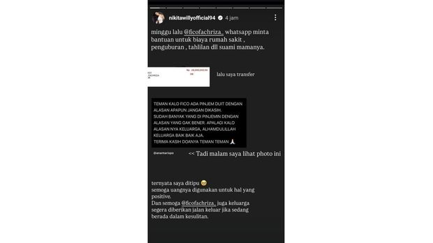

Nikita Willy Merasa Ditipu Usai Transfer Rp28 Juta ke Fico Fachriza

Purwakarta, AboutNews-- Aktris Nikita Willy mengungkapkan bahwa dia turut dimintai bantuan uang oleh komika Fico Fachriza dengan alasan untuk biaya rumah sakit dan pemakaman suami dari mamanya. Dalam unggahan Instagram Story-nya Nikita memperlihatkan bukti transfer uang senilai Rp28 juta yang atas permintaan Fico. Uang tersebut diklaim Fico untuk bantuan untuk biaya rumah sakit dan pengurusan kematian ayah tirinya.
"Minggu lalu, @ficofachriza_ WhatsApp minta bantuan untuk biaya rumah sakit, penguburan, tahlilan, dan lain-lain untuk suami mamanya. Lalu saya transfer," kata Nikita dalam instagram storienya, Sabtu (28/12).
"Tadi malam saya liat foto ini. Ternyata saya ditipu. Semoga uangnya digunakan untuk hal yang positif. Dan semoga @ficofachriza_ juga keluarga segera diberikan jalan keluar jika sedang berada dalam kesulitan," lanjutnya, masih dalam unggahan yang sama.
Nikita bahkan menandai akun Instagram Fico dalam unggahan tersebut. Hal ini dilakukan ini untuk mengonfirmasi bahwa dirinya adalah korban. Nikita bukanlah satu-satunya oran yang jadi korban penipuan pinjam uang oleh Fico. Sejumlah artis lainnya, termasuk Teuku Ryzki eks CJR dan Aurel Hermansyah, juga mengungkapkan hal serupa. Mereka juga telah menjadi korban omongan manis Fico. Bahkan, kakak Fico Fachriza, Ananta Rispo, memberikan peringatan kepada siapa pun yang dihubungi adiknya untuk tidak mentransfer uang apapun. Rispo mengetahui bahwa Fico sering menggunakan alasan palsu untuk mendapatkan uang dari orang lain. Fico Fachriza, dikenal lewat ajang Stand Up Comedy Indonesia (SUCI) pada 2013. Sebagai komedian, aktor, dan konten kreator, Fico dikenal dengan berbagai karya-karyanya yang menghibur di televisi dan media sosial. Fico juga sempat terjun ke dunia layar lebar dengan keterlibatannya dalam berbagai proyek film seperti Keluarga Cemara dan beberapa film komedi lainnya. Fico sendiri telah menyampaikan klarifikasi melalui unggahan video di akun instagramnya. Dalam klasifikasi tersebut dia tidak membantah soal meminjam uang kepada sejumlah artis dan temannya.